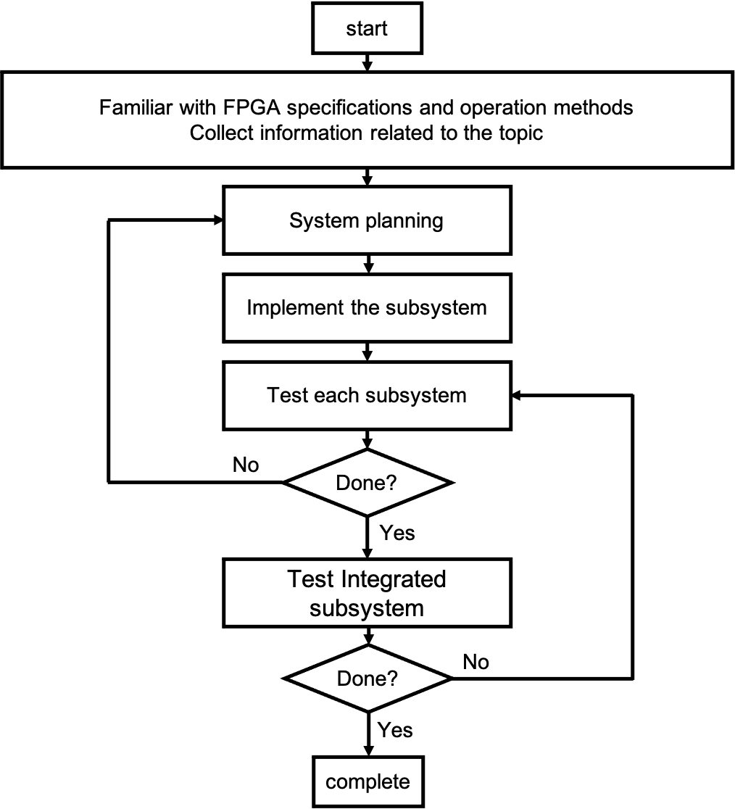

The problem
Contents
The problem#
Motivation#
When I was in Taiwan, there were always a lot of choice for the night snack. However, Most shops and super market will closed daily after the 8 p.m in Germany. For that reason, It’s not convenient for buying night snack in the middle of night.
To slove the problem, a intelligent vending machines coudl work not only 24/7 but also no manpower.
(I want just to buy some snacks in the middle of the night and watch moive XD!)
Meanwhile, I am more interested in hardware design during my FPGA study.
Conseqently, I want to use this final project to implement it and learn more about hardware design and logic design. In the following paragrpahs, a intelligent vending machines circuit on FPGA will be presented.
Procedure#
This topic is mainly implemented on FPGA, so it is necessary to understand the specifications and operation methods of FPGA. In addition, vending machine system architecture and sub-projects are also required to implement special topics.
Figure 1 shows the projects process, the steps are as follows:
